AOS Lecture Notes - Lesson 2 - OS Structures
OS Structure Overview
- OS Structure Definition: The way the OS software is organized with respect to the applications that it serves and the underlying hardware that it manages
- OS must protect integrity of resources it manages
- However, some things do have to run in privileged mode. OS must permit this, flexibly.
- Goals of OS Structure:
- Protection: within and across users and the OS itself
- Performance: time taken to perform the required services
- Flexibility: extensibility. not one size fits all, but the ability to add or adapt to what a given use case needs
- Scalability: performance improves as hardware resources improve.
- Agility: adapting to changes in application needs and/or resource availability
- Responsiveness: reacting to external events quickly (e.g. peripheral inputs, network inputs, etc)
- Some of the above goals seem to conflict with each other. e.g. performance and protection
- we will explore ways in which OS researchers satisfy these seemingly conflicting goals
- Commercial Operating Systems
Monolithic Structure
- 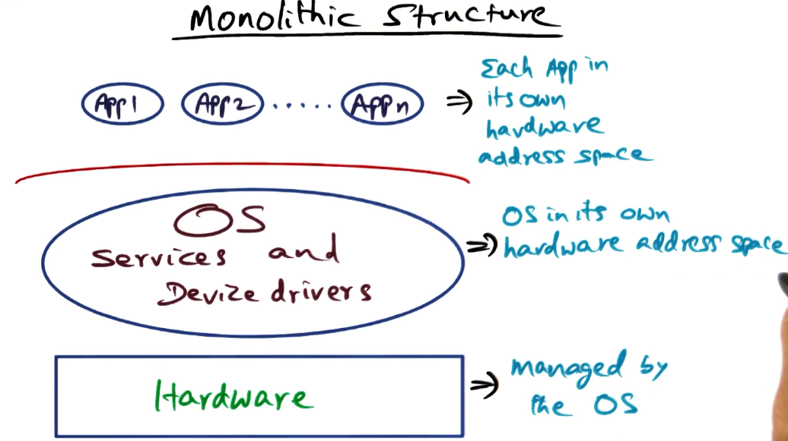
- Hardware all managed by the OS
- Each App in its own hardware address space
- allows protection between applications
- OS in its own hardware address space
- all of it: filesystem, scheduler, memory management unit, network, etc.
- when an app needs any OS-provided service, must context switch between address spaces
DOS-like structure
- DOS looks, at first glance, very similar to a monolith
- Key difference is that line dividing apps from OS is dotted, instead of solid
- Main difference is no protection between the application and the OS.
- Pros
- performance => access to system services like a procedure call
- no context switching!
- Cons
- an errant application can corrupt the OS
- trampling the OS address space is very easy
- This was a single-user approach, really designed for running a single app at a time. Protection was seen as less important.
- Loss of protection in DOS-like structure is simply unacceptable for a modern OS.
- Monolithic structure reduces performance loss by consolidation all services into one structure, preventing the need for context switching to multiple address spaces for different services required.
- But, monolithic structure limits ability to customize the OS for different needs.
- Some examples make this limitation more visible. Provided example is video games, which have very strict and unique requirements. Computing prime numbers would have very different requirements than an interactive video game.
Opportunities for Customization
- Memory Management – how should an OS handle page faults
- OS actions
- find a free page frame
- page replacement algorithm would run to free up page frames to have them ready for this point
- the OS over-commits available physical memory, similar to an airline overbooking
- this cleanup is a general fit, the optimal memory cleanup would be custom-fit to the memory use patterns of a given app. a This presents an opportunity for customization.
- OS initiates disk IO to move page from virtual memory to free page frame
- update page table for faulting process
- resume process
- The above is one example of opportunity for optimization, but there are many others, such as CPU scheduling, filesystem, etc.
Microkernel Structure
- The missed opportunities for customization prompted OS designers to consider alternative structures that would more easily allow the OS to be tweaked to various use cases.
- 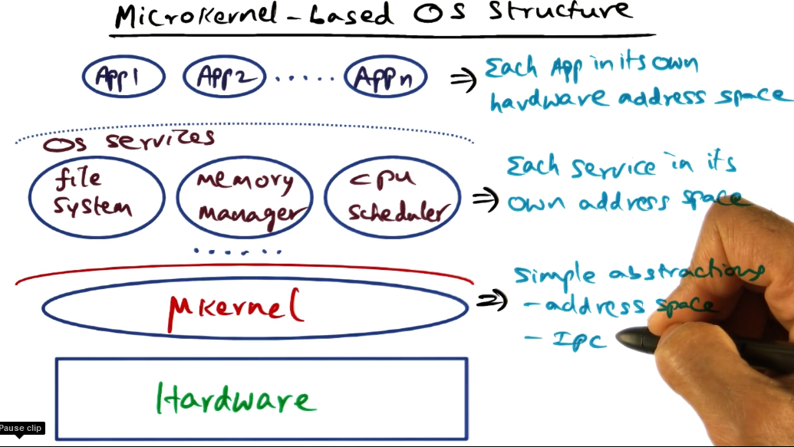
- As with a monolith, each app goes in its own address space
- The microkernel runs in a privileged mode and provides only very simple abstractions
- threads, address space, IPC
- mechanisms provided, not policies
- Each service then goes in its own address space, sitting on top of the microkernel as server processes.
- execute with the same privilege as the apps themselves. in principle there is no distinction between apps and services
- this protects the services from each other, and the microkernel from the services.
- The microkernel must provide IPC abstraction to allow the apps to request services from the server processes, and the server processes to communicate between each other
- Pros
- Extensibility. Because OS services are implemented as server processes, these server processes can be replicated with different characteristics. FS1 and FS2 can run alongside each other, and an app can request from whichever one is better suited to its use case.
- Cons
- Potential for performance loss
- In monolithic structure, app calls for a service, one context switch to OS privileged mode. All needed services can now be accessed at normal procedure call speed
- In a microkernel structure, app must make IPC call to contact filesystem. App must go to microkernel, microkernel calls filesystem server process, and then two hops back the other way.
- may have to context switch far more often than otherwise needed
- 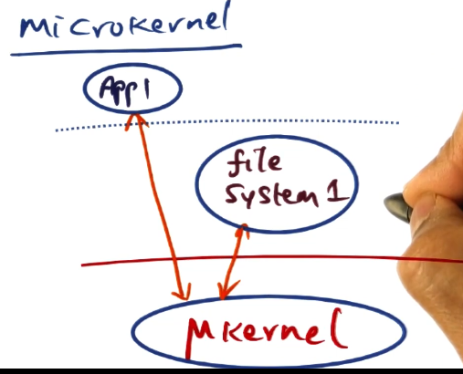
- Border crossings – the sheer time spent in context switches
- Change in locality – cold caches everywhere
- User space<->system space copying of data (required for protection of separate address spaces)
- We will later discuss an example of a microkernel that was carefully designed to minimize this performance loss
So what do we want?
- Performance
- Extensibility
- Protection
- These three are conflicting goals, that various designs balance against each other to try and achieve best overall experience. Throughout this course we will discuss approaches that try to accomplish this
- 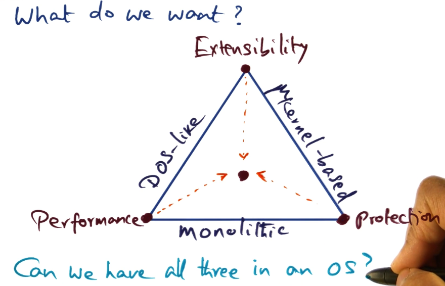
The SPIN Approach
- Trying to resolve the opposing weaknesses of microkernel and monolith OS designs
- What are we trying to achieve
- OS structure should be thin (like a microkernel), having only **mechanisms** and not **policies**
- OS should allow fine-grained access to resources without border crossing (like DOS)
- flexibility for resource management to suit needs of the application (like microkernel) without sacrificing protection and performance (like monolithic)
Approaches to Extensibility
- capability-based [Hydra OS (Wulf ’81)]
- kernel mechanisms for resource allocation (not policies)
- capability-based resource access
- lots of abstraction and context loaded into the term ’capability’ in the OS world
- capability is a very heavyweight abstraction
- resource managed as course-grained objects to reduce border crossing overhead
- heavyweight capability means context switching would be extra expensive
- this approach reduced flexibility and extensibility
- the coarser you make these objects, the less opportunity you have for customizing the services
- Microkernel-based (e.g. Mack from CMU in 90’s)
- Mach focused on extensibility and portability
- implemented all services as server processes that run as normal user-level processes above kernel
- achieved its goals, but performance was sacrificed too much
SPIN Approach to Extensibility
- Co-location of kernel and extensions in same address space
- avoids border crossing
- this raises DOS-style concerns about protection of the kernel
- Make extensions as cheap as a procedure call
- because we have co-located the kernel and extensions in the same address space
- Compiler-enforced modularity
- this addresses protection by relying on the characteristics of a strongly-typed programming language to guarantee protection
- Done in MODULA 3, more on this later
- Kernel provides well-defined interfaces, similar in principle to function prototypes in a header file
- Data abstractions provided by the programming language, such as an object, serve as containers for logical protection domains
- removes reliance on hardware address spaces for protection
- kernel provides only interfaces, these logical protection domains implement the functionality that is enshrined in the interfaces
- Dynamic call bindings
- provide multiple implementations of the interface functions
- applications can dynamically bind to the different implementations, whichever one suits them best
Logical Protection Domains
- Modula-3 Safety and Encapsulation Mechanisms
- a strongly typed language
- type safety, encapsulation
- automatic storage management
- objects
- good encapsulation. only the entry points are visible outside the object, not the implementation
- enforces good practices, does not allow “cheating” as is possible with e.g. C
- threads
- exceptions
- generic interfaces
- All of these serve well in implementing system protections as objects
- the entry points serving as gates to what can be done allows protection of the object, in this case the kernel components
- Generic interface mechanism allows multiple implementations of the same service, allowing apps to use whichever is best for them
- Fine-grained protection via capabilities
- you can conceptualize various granularities of service/capability as objects or hierarchical objects
- hardware resources (e.g. page frame)
- interfaces (e.g. page allocation module)
- collection of interfaces (e.g. entire VM)
- Capabilities as language-supported pointers
- as noted above, the term ’capabilities’ in OS research refers to a heavyweight mechanism
- however, because we are dealing here with a strongly-typed language bent to serve as an OS, capabilities to objects can be supported as pointers.
- Thus, access to the resources (entry points to an object that is representing a specific resource) is provided via capabilities that are simply language-supported pointers
- Therefore, these capabilities are much cheaper than those used by the Hydra OS
- Note (Quiz):
- the difference between pointers in C and in Modula-3 is that Modula-3 pointers are type-specific
- Modula-3 pointers cannot be forged. The only way you can use a pointer is to point to the same type of thing it was originally constructed with. No casting.
- This is what provides the logical protection in the SPIN OS described above
SPIN Mechanisms for Protection Domains
- create
- init with object file contents and export names contained as entry point methods inside the object to be visible outside
- example: memory management service can be created and names for it exported out to the rest of the OS
- Resolve
- resolve names between source and target domains
- very similar to linking two separately compiled files together, so they can access the names/symbols used in each other
- Once resolved, resource sharing can be done at memory speeds.
- Combine
- to create an aggregate domain from two smaller protection domains. union of all entry points of component domains.
- All the SPIN secret sauce comes from the compile-time checking of the MODULA-3 language allowing the enforcement of the protection of these domains and mechanisms.
Customized OS with SPIN
- 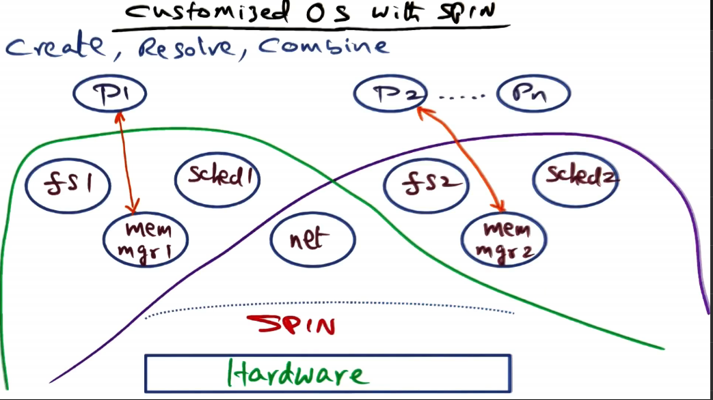
- The upshot of the logical protection domain is the ability to extend SPIN to include OS services and make it all part of the same hardware address space
- no border crossing between the services or the mechanisms provided by SPIN
- Above image shows example of multiple OS’s with different service selections implementing the same functionality differently, but using some shared extensions
Example Extensions
- 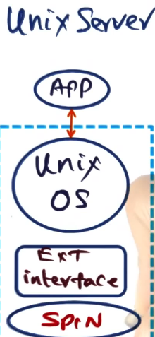
- UNIX Server implemented as an app on top of a normal UNIX OS on top of a SPIN extension

- A client-server application implemented directly on top of SPIN with extension interfaces to provide only functionality actually needed for client or server to function
SPIN Mechanisms for Events
- An OS has to field external events
- e.g. interrupts or a process incurring exceptions
- SPIN supports events using an event-based communication model
- Services register ’event handlers’ with the SPIN event dispatcher
- SPIN supports both 1:1, 1:many, and many:1 mappings between events and handlers
- Walkthrough example of packet handling from ethernet or ATM via IP protocol, and may be passed to various paths (ICMP, TCP, UDP) and from there on out to various places as needed
- these subsequent destinations may cause events themselves, and be passed on to their own handlers
- Order of handlers being scheduled is not reliable, in the case of multiple handlers for a given event (similar to POSIX thread ordering not being reliable)
Default Core Services in SPIN
Memory Management
- SPIN wants to allow extension to handle memory, and allocates it to them to do so
- Physical address
- allocate, de-allocate, reclaim
- Virtual address
- Translation
- create/destroy address spaces, add/remove mapping
- Event handlers
- page fault, access fault, bad address
CPU Scheduling
- SPIN global scheduler
- SPIN only decides at a macro level the amount of time that is given to a particular extension
- interacts with application threads package
- SPIN abstraction: strand
- actual OS that extend SPIN map their threads to strands
- unit of scheduling
- semantics defined by extension
- event handlers
- block, unblock, checkpoint resume
Overall
- Each of the above should be instantiated as a logical protection domain, allowing address space sharing and the optimization that brings
- These functions are defined by core OS, but implemented by extensions. As in “header file” analogy above, where the extensions are the actual code, SPIN only provides the definitions
- Final note, somewhat unrelated: core services implemented as extensions are obviously high-risk and their applications must trust them, but one additional protection offered is that this trust must only be given to the specific extensions an app relies upon. Problems in other extensions do not affect that app.
The Exokernel Approach
Exokernel Approach to Extensibility
- The name “Exokernel” comes from the fact that the kernel exposes hardware explicitly to the OS extensions living on top of it.
- 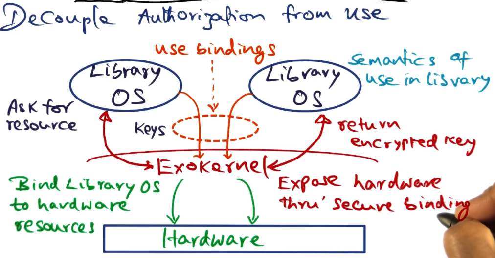
- The core principle is to decouple authorization to use the hardware from its actual use
- Exokernel validates requests for resources, then binds the request to the resource in question
- Semantics of use by a given library OS is up to the library itself. Conventions may apply, of course.
- Once a library OS has asked for a resource and the kernel has created the binding for the resource to the requester, then the library is ready to use the resource.
- Library OS will present the encrypted key to the exokernel to validate usage but otherwise stay out of the way. “Doorman” sort of activity here.
- Establishing the secure binding is the heavy duty operation. Validation after that is quite fast, improving overall performance as you amortize the cost of the initial binding
Examples of Candidate Resources
- TLB entry
- virtual to physical mapping done by library OS
- binding presented to exokernel
- exokernel validates access and puts it into hardware TLB
- this is a privileged operation so library OS cannot do it by itself
- Process in library OS OS uses multiple times without exokernel intervention
- this is, therefore, quite fast
- Packet Filter
- to be executed every time a packet arrives
- predicates are loaded into kernel by library OS
- this is the heavy duty operation, needs kernel and library OS to communicate
- checked on packet arrival by exokernel
- very fast, no communication needed back to library OS
- Both of these are examples of “initial binding expensive and slow, subsequent use cheap and fast”
Implementing Secure Bindings
- Three methods
- Hardware mechanisms (e.g. TLB entry above)
- physical page frames, portion of frame buffer. All examples of hardware resources that can be requested by library OS and can be bound to it by exokernel.
- Software caching
- “shadow” TLB in software for each library OS (aka caching hardware TLB into a software cache)
- avoid context switch penalty for switching between library OS’s
- Downloading code into kernel
- avoid border crossing by inserting specific code an OS wants executed. example of packet filter above would fall into this implementation method.
- functionally equivalent to SPIN extensions
- A close comparison can be made between this implementation method and SPIN’s “extend logical protection domains”. This one compromises protection more, as the code added to kernel is arbitrary, whereas with SPIN benefits from the compile time enforcement and runtime verification
Memory Management in Exokernel
- Given example: a page fault handled by library OS from an app running in threads on exokernel
- exokernel passes fault up to library OS through registered handler
- library OS knows about processes while exokernel does not. library OS services page fault. may require requesting resources such as page frame from exokernel
- library OS does address mapping, and presents to exokernel along with TLB entry where mapping should be stored
- presented along with encrypted key, as usual
- exokernel will store mappings into TLB (privileged op)
Software TLB
- During context switch, a big source of performance loss is losing locality for newly scheduled process
- address spaces for separate library OS’s are necessarily different, require full TLB flush, huge source of overhead
- S-TLB is a snapshot of the hardware TLB for each of the different library OS’s
- If exokernel switches from library OS1 to OS2:
- dump TLB into S-TLB for Library OS1 (really only a subset, discussed more later)
- preload TLB with S-TLB for OS2
- OS2 will then have its mappings available in TLB when it goes to look for them
- if TLB miss happens anyway, page fault sequence happens as normal
Code execution in Exokernel
- library OS is given permission to run arbitrary code in the kernel
- this is done to avoid the performance costs associated with context switching into/out of kernel space
- this presents a huge security risk to the kernel.
- while both SPIN and Exokernel favor extensibility, some restrictions must be considered for security’s sake
CPU Scheduling in Exokernel
- Exokernel maintains linear vector of time slots
- Every time slot/quantum has a beginning and an end
- Time quanta represent time that is allocated to the library OS’s that live on top of exokernel
- Each library OS gets to mark its slots on startup
- Control is passed to exokernel as each time slot expires, and then reassigned over to next slot owner.
- This allows saving and such for context
- Not actual preemption, OS will own the processor.
- A misbehaving OS that does not relinquish processor will be penalized by removing time from future slots to make up the difference
- Processor kernel will only be handed back to exokernel on time slot expiration or in case of things like page faults where the exokernel needs to do some of the work
Revocation of Resources
- Exokernel supports no abstractions, only mechanisms for giving over control to library OS’s (such as space, memory, hardware, etc)
- Therefore exokernel needs a means of revoking or reclaiming resources
- Exokernel keeps track of what resources have been given out
- However, exokernel has no means of knowing what the resources are actually being used for
- mechanism is revoke(repossession vector) passed to library OS
- library OS is responsible for cleanup and corrective action
- e.g. if page frame is being reclaimed, library OS must stash contents to disk
- library can “seed” exokernel for “autosave”
- library OS can tell exokernel to save any reclaimed page frames to disk in advance
- provides speedup, less back and forth with library OS
Exokernel Summary
- 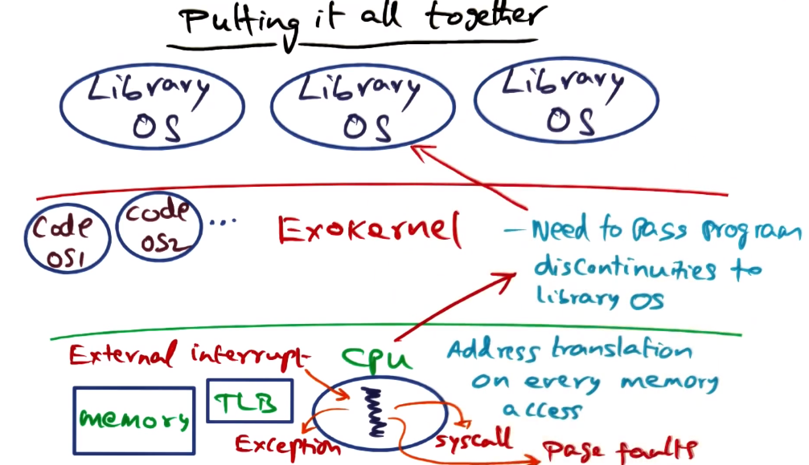
- Under “normal” operation, library OS passes execution threads down to exokernel, which passes down to the hardware, and runs until its done or the timeslice expires
- any discontinuities in thread running on hardware are kicked back up to exokernel, which must then pass up to library OS to handle as desired
- exokernel maintains state for each library OS to help handle these discontinuities properly
State Maintained by Exokernel
- 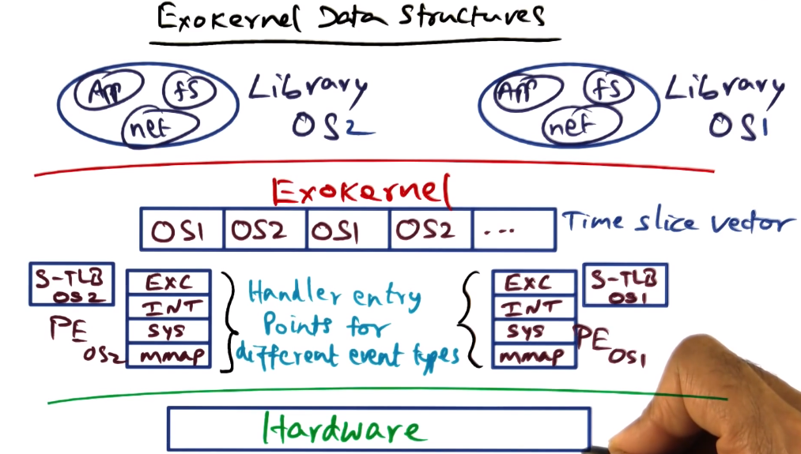
- maintains PE data structure on behalf of each library OS
- PE contains entry points for each library OS for dealing with the different kinds of program discontinuities0
- similar to event handler mechanism from SPIN section
- Also maintains S-TLB for each library OS
Comparison of Exokernel and SPIN
- must always remember not to compare using absolutes. Instead compare trends, and compare against like competitors
- The comparison for Exokernel and SPIN (early to mid 90s) was monolithic (UNIX) and microkernel (Mach).
- Comparative metrics were space and time.
- probably also security and extensibility, but those are harder to quantify?
- SPIN and Exokernel do much better than Mach for protected procedure calls
- also both do as well as UNIX for dealing with system calls
The L3 Microkernel Approach
- Both SPIN and Exokernel begin with the assumption that microkernel must have poor performance
- assumption based on Mach, but portability was a key goal for mach.
- if performance was the only goal, would it be possible? L3 will provide us the answer
- Core idea of a microkernel is that microkernel provides small number of simple abstractions. all system services are each in their own address space. only microkernel runs as privileged as covered in prior section
- Border crossings
- implicit and explicit costs
- explicit cost is the context switch required for an app to trap into the microkernel. many extra border crossings going from app to kernel to services and back
- Protected procedure calls
- run at 100x the time cost of normal procedure calls because they are going across address spaces
- implicit cost of border crossings is the fact that crossing address spaces completely loses locality in TLB and cache
L3 Microkernel Goal
- Proof by construction to debunk myths about microkernel-based OS structure
- Still has minimal services provided
- Address space
- Threads
- IPC
- Generate Unique IDs
- System services are still distinct protection domains, protected from each other and applications, and separate from the kernel.
- What’s different about L3 is that each services is in their own protection domain, not necessarily distinct address spaces.
- There are ways to construct system efficiently, knowing the features of the hardware platform
- Key thesis for L3 is that it’s all about efficient implementation
Strikes Against Microkernel Design
- Kernel-user switches
- border crossing cost
- required for every syscall
- Address space switches
- basis for Protected Procedure Calls for cross protection domain calls
- a result of each system service living in its own address space
- minimally involves flushing TLB, which is costly
- Thread switches and IPC
- thread switches + IPC must be mediated by kernel
- system services must talk to each other through kernel, requiring many extra border crossings, which is very costly
- All the above are explicit costs tied to microkernel design
- Memory Effects
- locality loss in cache and TLB
- an additional implicit cost, driven by separate address spaces for services
L3 Debunking Myths about Microkernel Slowness
Debunking user-kernel border crossing myth
- L3 accomplishes user-kernel border crossing in 123 processor cycles
- this includes TLB and cache misses
- Also counts the minimal cost involved in a border crossing, show that theoretical minimum is 107. 123 is therefore pretty close to optimal
- Mach took 900 cycles for the same, making it a very unfavorable point of comparison. This weakens the argument that SPIN and exokernel used.
Debunking address space switches myth
- Going across address spaces is expensive? Explicit costs addressed as myth
- Review of address space switch:
- Virtual address consists of tag and index
- Index is used to look up in TLB
- tag is used to match against tag in TLB. match == hit
- retrieve PFN from TLB
- On context switch, VA -> PA mapping will obviously change
- so all stored translations are useless and must be cleared? It depends!
- if the TLB has a way of recognizing that VA->PA mapping is valid for currently used VA, maybe not?
- tags for address spaces to the rescue! contain process ID for which TLB entry is valid. Flushing no longer needed!
- 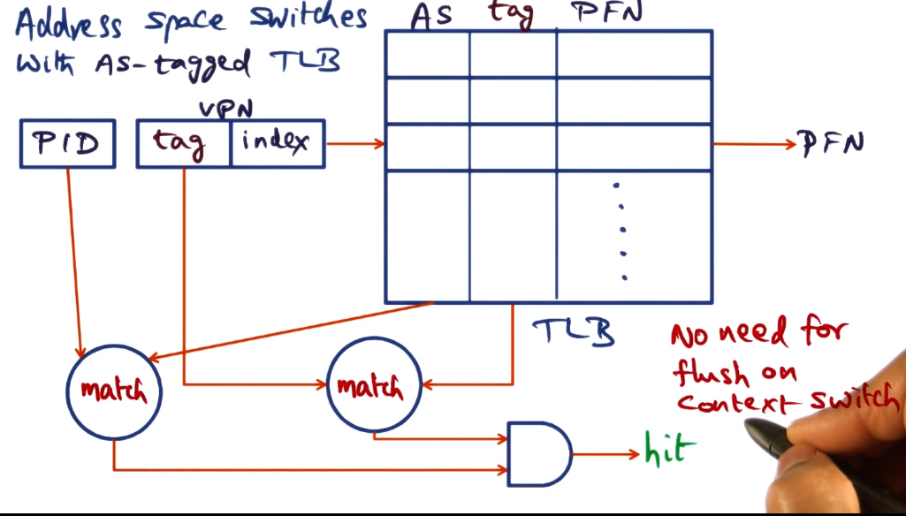
- this does require hardware support, though, so not always an option. if you’re on Intel, for example, what should you do instead?
- Liedtke’s suggestion for avoiding TLB-flush when hardware support for AS-tagging is absent:
- Exploit architectural features – e.g. segment registers in x86 + PowerPC
- specify the range of addresses that can be legally accessed by the currently running process.
- carve up linear address space using segment registers
- share hardware address space for protection domains
- this approach is actually quite fast, as it skips looking at TLB at all if the requested address is ’illegal’
- works best with smaller address spaces, as hardware address space is being divvied up, you lose the “infinite virtual memory” perk of common monolithic kernel systems
- What if the needed protection domains are large? What if it needs all of hardware address space?
- In this case, and there is no support for AS-tagging in TLB, you’re just stuck doing a TLB-flush on address space switch
- Costs above are explicit costs. In the case of large protection domains those are much smaller than the implicit costs.
- Loss of locality is complete in this case, all caches are ice cold. This is a much bigger hit. Explicit cost here is 864 cycles for TLB flush in pentium, but loss of locality will be far more significant.
- 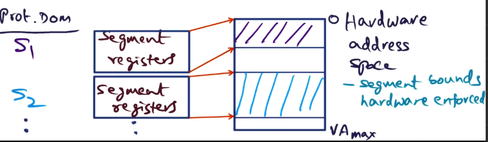
Debunking thread switches and IPC myth
- Switch involves saving all volatile state of processor – explicit cost
- By construction shown to be competitive to SPIN and Exokernel
- Uh…. not a lot of detail provided here. They built it, it was just as fast, the end?
Debunking memory effects myth
- This was the big “implicit cost” hit discussed above
- Loss of locality in microkernel is much bigger than monolith/SPIN/Exokernel?
- 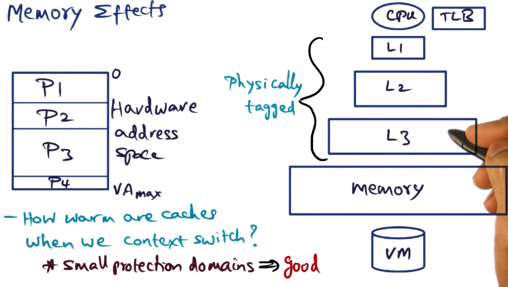
- Hardware address space may not all be in physical memory, may be demand paged from disk
- Working set slowly dragged up into higher level caches as a process runs
- memory effects == how warm are caches when we context switch?
- with small protection domains, all can share address space through segment registers as suggested above. This results in very warm caches
- if protection domains are large, can’t be helped. it’s going to need to be flushed out. This is true even for monolithic kernel. Cache pollution must be incurred.
- Thus the only place where monolithic/SPIN/Exokernel can really differentiate is in cases with small protection domains, and Liedtke’s suggestion means that there is no real advantage for them there either
- So why was Mach so bad?
- border crossings cost 800 more cycles
- due to: focus on portability (run on any architecture) => code bloat => large memory footprint => lesser locality => more cache misses => longer latency for border crossing
- Therefore the kernel memory footprint is the culprit, not the architecture itself!
- Corollary: portability and performance are in contradiction with each other
Thesis of L3 for OS Structuring
- Minimal abstractions in microkernel
- Microkernels are processor-specific in implementation => non-portable!
- Right set of microkernel abstractions and processor-specific implementation => efficient processor-independent abstractions can be implemented at higher layer